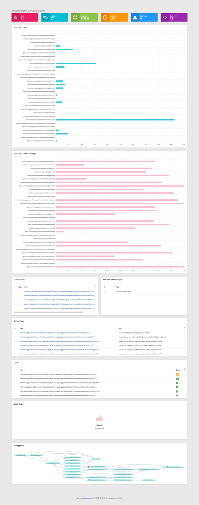

代码质量一直是每个研发团队关心的问题，提高代码质量一般会从测试驱动开发（TDD），验收测试驱动开发（ATDD），持续集成（CI），代码审查，静态分析工具，编码标准等多个方面入手，在此我想说说代码审查以及静态分析工具和编码标准。
代码审查
代码审查（英语：Code review）是指对计算机源代码系统化地审查，常用软件同行评审的方式进行，其目的是在找出及修正在软件开发初期未发现的错误，提升软件质量及开发者的技术。代码审查常以不同的形式进行，例如结对编程、非正式的看过整个代码，或是正式的软件检查[1]。—— Wikipedia
CodeReview的重要性在我们开发过程中不言而喻，我们一直想法设法来搭建CodeReview平台，一直也在规范我们的代码提交流程，但据我自己目前经历实践中这个方面还是很弱，大家都知道很重要，但都不是很在意去付诸行动。怎么才能改善这个问题呢？我觉得通过工具来自动化的格式化代码，自动分析，自动评估代码质量，甚至给出代码的分析报告，尽量的将不规范和不足的地方直接指出，不仅提高了CodeReview效率而且在一定程度上即使我们再懒也能提高我们代码的审查质量。
Go语言运行 gofmt 来自动化的解决你代码的主要的机械的风格问题，这点在我看来是非常棒的，完美解决了项目，甚至整个部门的代码风格问题。不再为是Tab还是空格，是换行大括号还是不换行扯皮。但还要一个问题我们没有解决，就是代码质量，换句话说我们要使用工具自动化的对代码进行评估，就像给软件挖漏洞一样，潜在和错误的代码逻辑，复杂不可维护的代码段，明确指出，一定要改，要优化，在一定程度上代替人为的CodeReview。
我所认为的代码审查（CodeReview）
为什么需要编程标准？
gofmt是Go的一大卖点，也是我非常喜欢的一个工具，我也相信Golang开发者都喜欢，如果不喜欢那就再用一遍，哈哈哈！2015年gofmt的作者还专门做了一个关于gofmt的分享：地址
一统Golang江湖代码风格。
代码分析工具
在Go语言中编程标准，也即代码风格格式化，是每一个Go项目必须遵循的。这样我们才有更多精力去看代码本身，代码设计是不是正确，是否还可以优化等等。我们知道，只要涉及到人都会有疏漏，如何减轻人的负担，或者说如果上面的审查实践不好怎么办，自动化的代码分析工具应运而生，包括静态代码分析和动态分析。稍微深入了解Go社区的童鞋应该见过各种变量检查，常量检查，代码精简，重复代码等等之类的工具，这些工具都从各个纬度对代码静态分析，大多通过扫描AST或者代码扫描实现。自动化的工具有个好处，就是尽然审查不够完善灵活，但在一定程度上减少了低级错误出现的概率，更重要的是我们可以对整个代码有一个宏观的了解。
在我所在团队我们针对每一个Go项目，在gofmt等一些代码风格格式化的基础上，我们通过集成代码圈复杂度，重复代码，单元测试（包括测试覆盖率和耗时），自动代码优化，无效代码，模块依赖图等静态和动态方式评估整个项目代码，后续还会增加注释占比，命名规范等审查。重要的是，我们已经通过在线网站和安装工具方式来实现了这些，并实时生成审查报告。
DEMO:
在我所在团队我们针对每一个Go项目，在gofmt等一些代码风格格式化的基础上，我们通过集成代码圈复杂度，重复代码，单元测试（包括测试覆盖率和耗时），自动代码优化，无效代码，模块依赖图等静态和动态方式评估整个项目代码，后续还会增加注释占比，命名规范等审查。重要的是，我们已经通过在线网站和安装工具方式来实现了这些，并实时生成审查报告。
该工具已经开源，可自行下载使用：wgliang/goreporter。这个工具还在不断完善优化，未来会增加更多纬度的审查分析和评估指标。
参考文献